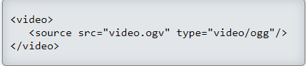

Para utilizar audio en HTML5 sin usar plugins externos ocurre algo parecido que con el vídeo. Existen diferentes formatos de audio y desgraciadamente no existe ninguno que funcione perfectamente en todos los navegadores, por lo que al menos tendremos que utilizar dos formatos para poder abarcarlos a todos.
Estos 2 formatos de audio mayoritarios son:
El formato MP3 (ficheros con extensión .mp3) abarca a la mayoría de navegadores, excepto a FireFox. Aunque está ampliamente arraigado, está sujeto a patentes.
El formato OGG Vorbis (ficheros con extensión .ogg) no está sujeto a patentes (igual que ocurre en el caso del vídeo). No es aceptado por Internet Explorer ni por Safari.
Ejemplo práctico
Si queremos que el audio se pueda escuchar desde cualquier navegador (que soporte HTML5), tenemos que añadir a este código más posibilidades y por lo tanto tenemos que tener el audio grabado al menos en formato mp3 y ogg. Por lo que el código completo quedaría así:
En este ejemplo se han utilizado los atributos de 'autoplay' (para que escuches el audio cuando entres en esta página) y 'controls' (para mostrar la barra de controles).
como agregar un video a tu pagina web
para insertar un video en tu plataforma web debes tener en cuenta el siguiente codigo html teniendo en cuenta que el video este guardado en la misma carpeta que tu pagina web

ya que los atributos van en el css como el ancho,laro,la reproduccion automatica entre otros